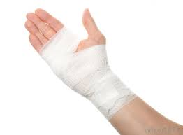
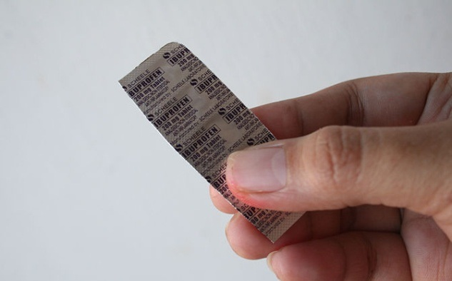
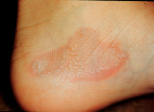

FIRST-DEGREE BURNS
1. Cool Burn
- Hold burned skin under cool (not cold) running water or immerse in cool water until pain subsides.
- Use compresses if running water isn’t available.
2. Protect Burn
- Cover with sterile, non-adhesive bandage or clean cloth.
- 
- Do not apply butter or ointments, which can cause infection.
3. Treat Pain
- Give over-the-counter pain reliever such as ibuprofen (Advil, Motrin), acetaminophen (Tylenol), or naproxen (Aleve).
- 
4. When to See a Doctor
Seek medical help if:
- You see signs of infection, like increased pain, redness, swelling, fever, or oozing.
- 
- The person needs tetanus or booster shot, depending on date of last injection. Tetanus booster should be given every 10 years.
- Redness and pain last more than a few hours.
5. Follow Up
- The doctor will examine the burn and may prescribe antibiotics and pain medication.